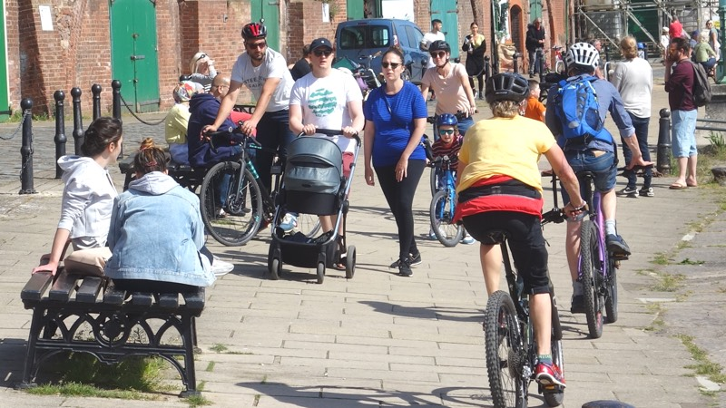
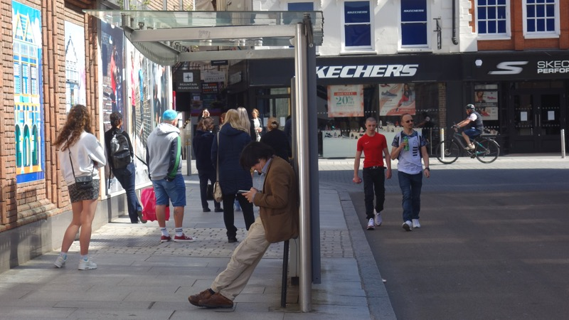
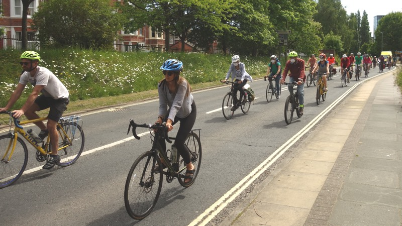

Two weeks have passed since the government announced a £250 million emergency active travel fund in response to dramatic increases in walking and cycling during coronavirus lockdown.
The fund is intended to relieve pressure on public transport as lockdown eases by enabling local authorities to create pop-up bike lanes with protected space for cycling, wider pavements for pedestrians and car-free corridors to ensure higher levels of active travel can continue.
Public transport will only be able to carry one tenth of its previous capacity under social distancing restrictions that are likely to last until at least the end of this year, so the transport network is likely to be overwhelmed as people return to work unless they travel on foot or by bike.
Transport Secretary Grant Shapps said: “Our trains and buses could become overcrowded and our roads gridlocked, holding up emergency services, critical workers and vital supplies.
“The coronavirus crisis has resulted in cleaner air and quieter streets, transforming the environment in many of our towns and cities. And millions of people have discovered, or rediscovered, cycling and walking.
“When the country gets back to work, we need them to carry on cycling, and to be joined by millions more. That is why towns and cities in the UK and around the world are making or proposing radical changes to their roads to accommodate active travel.
“We recognise this moment for what it is: a once in a generation opportunity to deliver a lasting transformative change in how we make short journeys in our towns and cities.
“The government therefore expects local authorities to make significant changes to their road layouts to give more space to cyclists and pedestrians.”
 Cyclists and pedestrians find social distancing difficult on Exeter quayside
At the same time the government issued new statutory guidance to Devon County Council outlining the actions it should take as highways authority to reallocate road space to walking and cycling.
They include installing mandatory cycle lanes which separate riders from traffic, quickly converting traffic lanes into temporary cycle lanes (suspending parking bays where necessary), and using cones and barriers to widen footways along lengths of road.
They also include introducing pedestrian and cycle zones by restricting access for motor vehicles to specific streets or networks of streets, particularly town centres and high streets, and closing roads to motor traffic using planters or large barriers to create modal filters.
The guidance says “whole route” approaches should be taken to “create corridors for buses, cycles and access only on key routes into town and city centres”.
The government has directed Devon County Council to implement these measures, among others, “as swiftly as possible, and in any event within weeks, given the urgent need to change travel habits before the restart takes full effect”.
The Traffic Regulation Orders that would normally make such changes costly for the council have either been waived or made easier to implement, and it has been directed to make changes “with a view to making them permanent, and embedding a long-term shift to active travel”.
According to legal advice received by the All Party Parliamentary Group for Cycling and Walking, councils are compelled to make the changes and central government could step in to take powers away from councils to ensure interventions are made.
However Devon County Council has yet to take action in Exeter.
Department for Transport coronavirus road sign
The Department for Transport also announced that the Prime Minister would launch an updated Cycling and Walking Investment Strategy in June with further measures to support the government’s cycling and walking aims.
Devon County Council was initially required to create an Exeter Local Cycling and Walking Infrastructure Plan under this strategy in April 2017. However three years have since passed without it producing such a plan, despite Exeter Cycling Campaign highlighting its importance in September 2018.
Since then the role of such plans in active travel funding has become more significant, to the extent that councils that have included them in their transport policy frameworks or have local transport plans with ambitious cycling and walking schemes are more likely to receive funding under the current emergency scheme.
The Exeter Transport Steering Group, created at the end of 2017 to “advise on the formulation of transport policy for Exeter and its travel to work area” acknowledged in September 2018 that Devon County Council was expected to produce the plans the Department for Transport required no later than summer 2019. Whether the steering group responded to Devon County Council’s failure to meet the government deadline is not known, as the decisions taken at its most recent meeting in October 2019 have never been published.
This steering group also oversaw the development of the Exeter Transport Strategy update. It approved the draft at its December 2018 meeting and agreed to take it to a public consultation in January 2019.
When the resulting consultation document appeared it received widespread criticism. It did not mention low emission or clean air zones, congestion charging or climate change at all, an omission Exeter Cycling Campaign “noted with incredulity” in a detailed point by point response.
It did however say it aimed to “facilitate the increase of car-based inward commuters from outside the city”.
 Extinction Rebellion Exeter DIY coronavirus cycle lane bike sign
Extinction Rebellion Exeter DIY coronavirus cycle lane bike sign
Exeter Cycling Campaign said Devon County Council’s road safety vision statement “that every route and every mode should be available to everybody, free from the risk or fear of harm” was “far from the reality on our roads”. It also pointed out that the strategy lacked “even a high level timetable”.
Exeter Green Party said it was “a fundamentally flawed document that we believe is entirely unfit to meet the multiple, challenges that Exeter faces in relation to transport and related issues, including air pollution”.
Exeter City Council’s consultation response also criticised the draft strategy for its lack of ambition and emphasised the importance of walking, cycling and public transport over private car use.
It said: “The city council believes that the time for radical change is upon us, that a step change is needed to encourage people to opt for sustainable travel modes in preference to the car, and that past prevarication about what needs to be done cannot continue.
“The city council believes that there is public support for putting pedestrians, cyclists and public transport users first.
“The city council strongly supports the need to further reduce the dominance of the car in the city centre and other locations by removing traffic and re-dedicating highway space for public transport, pedestrians and cyclists.
“We should be aspiring to the creation of a city where residents, commuters and visitors can access the city through green options that maximise clean air and space for walking, cycling and public transport”.
A pedestrian steps into the road to maintain social distance on Queen Street
By the end of the consultation Devon County Council had received around 1100 responses (representing less than 0.1% of the county’s 1.2 million residents), which it said showed “widespread support” for the draft strategy. The final version of the document was due for approval at the September 2019 county cabinet meeting, but was delayed without explanation in July to “between October and December” last year.
In November 2019 it was again delayed, until April 2020, only to disappear altogether from the county cabinet forward plan the month before it was due. There is no mention of it in the current forward plan, which lists planned decisions to March 2021.
When asked why the Exeter Transport Strategy had not been published at the county cabinet’s March 2020 meeting, Devon County County leader John Hart said: “Local and national transportation-related issues continue to occur such as changes in shopping patterns, edge of centre developments, rail (Marsh Barton station) and bus changes including patronage.
“In particular, the council has announced a climate emergency, continuing concern regarding air quality and there is a new government with emerging policies. We are also reflecting how this sits alongside the city council’s emerging Liveable Exeter proposals. This has resulted in a considerable amount of work.”
However all these factors predate the consultation’s conclusion, and none explain why the decision to postpone the strategy was taken five months later in July.
Rydon Lane retail park was completed in 1995, the same year Amazon and eBay launched, and Stagecoach has run the majority of Exeter’s bus services since 1996.
Exeter City Council and Devon County Council have both had statutory responsibilities to improve Exeter’s air quality since 2007 and Devon County Council published its Local Transport Plan in 2011, since when there have been three changes of government.
Marsh Barton railway station was planned in 2013 and has been due since 2016. And the city council published its Liveable Exeter proposals on 7 February 2019, the county council declared a climate emergency on 21 February 2019 and the draft Exeter Transport Strategy consultation concluded on 28 February 2019, one week later.
Moreover, despite the additional demands made on Devon County Council’s resources by the pandemic because of its public health and social care responsibilities, it has found the resources to update its Transport Infrastructure Plan, which covers 110 schemes across the county (of which just four are funded walking and cycling schemes in Exeter), and to make decisions about more than £116 million of transport spending.
Of this, just 3% of the £47 million 2020-21 transport capital programme and less than 5% of the £43 million 2020-21 highway maintenance capital budget will be spent on cycling and walking infrastructure in Exeter (the second figure includes 3.18% for footways and 1.58% for public rights of way, unsurfaced roads and cycling combined).
And while the county allocated 11.8% of its £26 million 2020-21 highway maintenance revenue budget to routine maintenance including cycle routes, the same fund is used for drainage, fencing, traffic signs, road markings and traffic signals too.
These sums are far short of the 15% of their transport infrastructure funding the Department for Transport encouraged local authorities to spend on walking and cycling in November 2018.
John Hart was also asked in March why Devon County Council is not making the reduction of car use in Exeter a high priority, but declined to answer.
 Pedestrians step into the road to maintain social distance beside a queue on Queen Street
Before last week’s cabinet meeting, at which most of this spending was decided, county council Liberal Democrat group leader Alan Connett called for what he called the county’s “old world” programme, designed before the coronavirus outbreak, to be reshaped in response to the government announcement that people should walk or cycle to work rather than use public transport as lockdown is lifted.
He asked the county to identify a priority list of “quick wins” that would make it safer for people to walk and cycle, adding: “Now is the time to be looking right across all the county council’s highways budgets and plans so we can put more into public transport, cycling and walking. The urgency is now, not in next year’s budget round.
“Before the lockdown comes to an end and the schools start back, we need to have really thought about what the new world of travelling to work and school will be. Now is the time to be looking at this in detail and, in effect, ripping-up the highways budget approved in February and starting again.”
At the same time Exeter Cycling Campaign published a crowd-sourced analysis of Exeter pinch points which make social distancing difficult with suggestions for making them safe under the new government guidelines.
It recommends interventions on key arterial routes including Heavitree Road, Alphington Road and Cowick Street as well as the Barrack Road/Polsloe Road/Mount Pleasant Road route to the Royal Devon & Exeter hospital at Wonford and Queen Street near Exeter College.
It also recommends the removal of motor traffic on Fore Street and Topsham High Street, the expedition of the existing E4 scheme on Union Road and modal filtering in residential areas including St James, St Leonards and Heavitree.
The campaign group said: “The idea is to help people feel safe enough to choose active travel. This means paths that protect those cycling from cars, lower speed limits, and pedestrian- and cycle-only zones. It also includes cutting out rat-runs to create low traffic neighbourhoods, safe school areas and changes to junctions.”
Mike Walton of Exeter Cycling Campaign said: “During the lockdown we’ve glimpsed a new future for Exeter. A future where our children can travel safely across the city, where the air is clean and where the car doesn’t dominate local neighbourhoods.
“Many people, many families, want to cycle and will do so if it feels safe. Just imagine how different Exeter would be if most of our short journeys were people-powered.
“We’re heartened to hear the government tell local authorities to get things done. It provides the mandate to Devon County Council to urgently lock in safe, convenient and connected routes for people to walk and cycle.”
Stuart Hughes, county council member for highway management, was asked at last week’s meeting to specify where the county would make the changes directed by the transport secretary.
He replied that the focus would be “on city and town centres where narrow footways could restrict pedestrian movement and on our urban walking and cycling networks where funding may enable us to fill gaps”.
In a statement the county then confirmed that temporary measures were “being explored” to extend and improve the existing walking and cycling network.
However the changes outlined in Exeter include only minor interventions in the city centre and in some residential streets and fall far short of the “new era” of “lasting transformative change” involving “significant changes to road layouts to give more space to cyclists and pedestrians” envisaged by the government.
And by indicating that it will consider only existing schemes, and in the absence of a Local Cycling and Walking Infrastructure Plan or Exeter Transport Strategy which prioritises walking and cycling over private cars in the city, Devon County Council has effectively ruled out following government guidelines to make significant changes in Exeter city centre or on its key arterial routes.
Pop-up cycle lanes in Milan. Photo: @demescope.
Other UK cities have not wasted time in seizing the opportunity that the government has presented. The City of London is banning cars on all the arterial routes in the square mile. The first phase will be complete by the end of next week.
Sadiq Khan, Mayor of London, has announced plans to ban cars and vans from many other major central London roads as well as Waterloo Bridge and London Bridge. He said: “We have no choice but to rapidly repurpose London’s streets for people. By ensuring our city’s recovery is green we will also tackle our toxic air, which is vital to make sure we don’t replace one public health crisis with another”.
Hackney Borough Council decided to filter its streets using bollards and planters on 20 April, three weeks before the Transport Secretary’s announcement, and other councils are closing roads near schools to deter people from driving to drop off and pick up their children.
Manchester has closed the Deansgate area of its city centre to traffic altogether and Bristol is following suit, with plans to restrict major city centre routes, close Bristol Bridge to private vehicles and pedestrianise much of its Old City area. Birmingham, Sheffield and Leicester have all fast-tracked similar plans.
Cities across Europe are also making dramatic changes to their roads as lockdown eases. Berlin has created fourteen miles of new bike lanes in three days. Milan has created 22 miles of new lanes and Brussels 25 miles, with the entire city centre now designated as “slow streets” where pedestrians and cyclists have priority over car drivers.
Athens has allocated 50,000m2 of public space to cyclists and pedestrians and Paris, which has already created twenty miles of new cycling infrastructure, has plans for another 30 miles. Mayor Anne Hidalgo said: “It is out of the question for the city to return to the pre-coronavirus traffic jams and vehicle pollution”.
Pop-up cycle lanes in Paris. Photo: @ParisBeauAVelo.
Diana Moore, Exeter Green Party councillor for St David’s, agrees. She said: “Creating more space for walkers and cyclists in Exeter is vital to keep people safe from infection and help prevent a return to the congestion and air pollution that plagued our city before the COVID-19 crisis and subsequent lockdown.
“Public transport will be unable to cope safely with high passenger numbers, so increasing active travel, especially for the 40% of urban journeys that are less than two miles, will be the only way to prevent gridlock in Exeter.
“We need a joined-up approach to enable people to cycle safely into and around the city centre and to places of work. This will mean reallocating space on sections of major routes.”
Meanwhile Extinction Rebellion Exeter has stepped in to create DIY pop-up bike lanes in the city centre in response to council inaction. The group said it wanted to highlight the need to make the streets safer for pedestrians and cyclists. Members then demonstrated the need for full-width lanes to maintain social distancing when riding bikes.
Caspar Hughes of Stop Killing Cyclists said: “While other councils are rapidly changing their streets to make them safe when lockdown eases, Devon County Council is doing nothing.
“Local authorities all over the country are making use of the government’s relaxation of Traffic Regulation Orders to install wider pavements and protected space for walking and cycling”.
Cyclists demonstrate socially distanced cycling on Exeter High Street
As the clean air and calm that made walking and cycling in Exeter a pleasure for the first time in decades give way to rapidly rising levels of returning traffic, polls show that only 9% of us want to return to life as it was before the pandemic and that 71% are concerned about air pollution returning to pre-lockdown levels.
With studies showing that air pollution levels are linked with COVID-19 symptom severity as well as death rates, and that 1750 fewer deaths occurred in the UK during lockdown due to dramatically improved air quality, campaigners are calling for widespread implementation of the government’s intended transport system changes.
In an open letter to local authority leaders and ministers, nine organisations including Greenpeace, Transport Action Network, Cycling UK and Living Streets said: “It would be completely absurd if, after the unprecedented efforts and sacrifices made to save thousands of lives from COVID-19, we allowed thousands more to be cut short by the devastating impacts of toxic pollution”.
However the much higher levels of active travel seen during lockdown that have led to a 50% drop in air pollution in Exeter city centre will continue only if local authorities make the significant changes that give more space to cyclists and pedestrians that the government expects.
And the 61% who feel cycling on the road is too dangerous seem to have a point in Exeter, where 39% of 255 road accident casualities in 2018 involved pedestrians or cyclists.
80 year-old grandmother Margaret Turner said: “As a seasoned cyclist I also ride on the roads but always, until the lockdown, felt I was taking my life in my hands.
“It’s noticeable how few people normally cycle in Exeter. As a grandparent I would feel very anxious about my grandchild venturing on the roads as they are. We need visible, wide cycle lanes which are well sign-posted and separated from motorised traffic.”
 Cyclists demonstrate socially distanced cycling on Western Way
With 58% of us supporting the introduction of cycle lanes on all main roads in urban areas and NHS leaders urging councils to deliver on the Transport Secretary’s promises as part of the Keyworkers Need Streetspace campaign, such changes would be popular as well as prudent.
And there’s no room for complacency. University of Cambridge research shows that while infection numbers remain stable, infection rates in the south west are the highest in the country after Yorkshire.
Nor does the 17% reduction in global carbon emissions in April offer any comfort.
Corinne Le Quéré of the University of East Anglia said: “This is a really big fall, but at the same time 83% of global emissions are left, which shows how difficult it is to reduce emissions with changes in behaviour”.
Emissions are expected to rise during the rest of the year as lockdowns ease, so the annual decline for 2020 is likely to be around 8%. This fall will be the largest since the second world war, nearly six times larger than the one that followed the 2009 global financial crisis, and will reduce emissions to their lowest level since 2010.
Devon County Council yesterday published a discussion paper that claimed maintaining half these projected 2020 reductions for the next 30 years would be sufficient to achieve net zero carbon by 2050, saying “the lockdown has given a glimpse of how a more sustainable Devon might look, feel and sound”.
A spokesperson said the report suggested that “the reduction in road transport and energy use has had an immediate and profound impact on emissions”.
But University of Reading research shows that sustaining these same reduction levels indefinitely would only remove about 0.15°C of global heating, and that we would still massively overshoot Paris Agreement targets.
Joeri Rogelj of the Grantham Institute at Imperial College said: “None of this is good news for anyone. For the climate, this month-long wake in otherwise record-high emissions is entirely insignificant.”